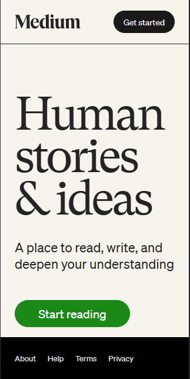

The Church of Jesus Christ of Latter Day Saints
lds.orgThe Church of Jesus Christ's website displays a great showcase for Fitts' Law. This law is defined as the time that is required to move your fingers to place the buttons that pertain to the items that they are related to. For example the "Learn More" button is right underneath the explanation for how Jesus's gospel can bless your life.
Medium
medium.com Medium's website is about 1 thing, reading and writing. Because of this, they get straight to the point. The layout is clean and easy to navigate, with a lot of white space that acts as breathing room around the elements.
The Church of Jesus Christ of Latter Day Saints
lds.orgThe Church of Jesus Christ's website displays a great showcase for Fitt's Law of CSS Design. This law is defined as the time that is required to move your fingers to place the buttons that pertain to the items that they are related to. For example the "Learn More" button is right underneath the explanation for how Jesus's gospel can bless your life.